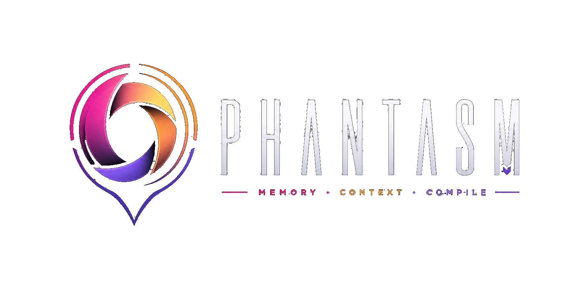

What changed recently?
Read the release changelog. It lists versioned release notes, including the current release.

Local-first · project-scoped · written in Rust
Phantasm bootstraps once per project, keeps durable context attached to the repository or folder where the work actually happens, and compiles exactly what an agent needs — fast, local, and deterministic. Task-independent: any agent, any workflow.
brew install indefiniteloop/tap/phantasm
# or
curl -fsSL https://raw.githubusercontent.com/indefiniteloop/phantasm-dist/main/scripts/install.sh | sh
phantasm --version
phm --version
cd /path/to/project
phantasm bootstrap
phantasm agents --add
phantasm handle-request '{"operation":"describe","params":{"target":"all"}}'FAQ
Read the release changelog. It lists versioned release notes, including the current release.
v0.2.3 adds quality metadata, freshness review, duplicate review, and canonical JSON memory export for Git review. See the command reference for the exact discovery and request shapes.
No. The public install paths use Homebrew or the published install script, so a Rust toolchain is only needed if you plan to build Phantasm from source.
Inside the repository under
.phantasm/. Config lives in
phantasm.toml and
clients.toml, while mutable state
lives under .phantasm/state/.
Edit the files created by bootstrap. The configuration reference explains every supported key in both runtime config files.
Not yet. The current shipped config surface does not expose a context-length setting after bootstrap. The configuration reference calls this out explicitly so the docs stay aligned with the code.
Everything you need to bootstrap, configure, and operate Phantasm inside your own repositories.